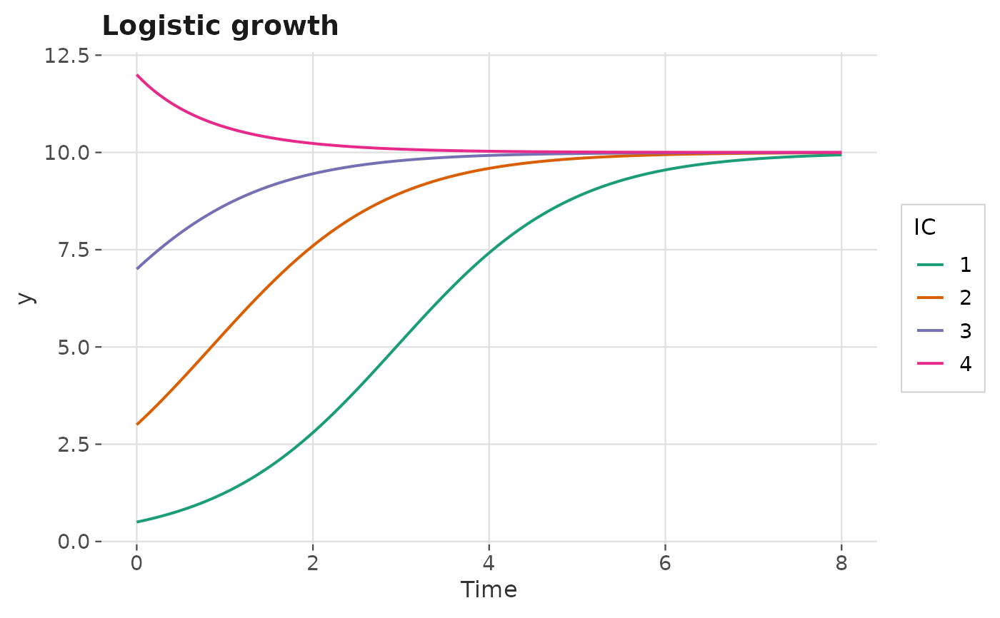
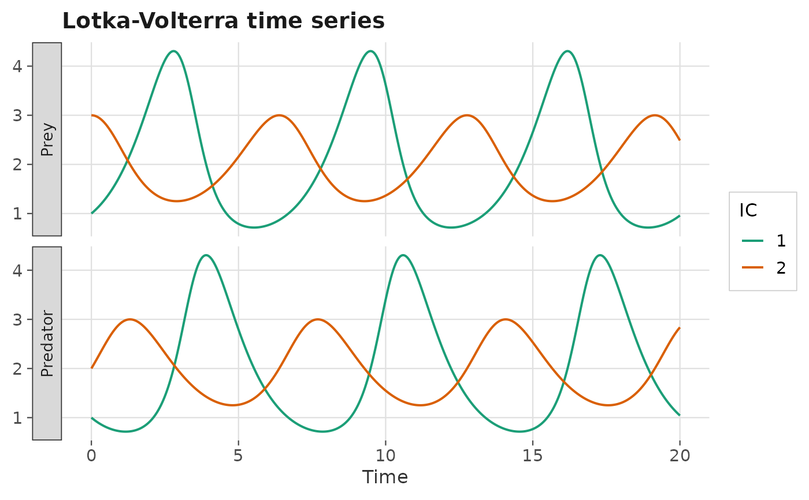

Numerically integrates a one- or two-dimensional autonomous ODE system
from one or more initial conditions and plots the state variable(s) as
functions of time. Returns a complete ggplot2::ggplot() object.
Arguments
- deriv
A function describing the ODE system, in Convention A or B. See ggphasr for details.
- y0
Initial condition(s). A numeric vector (single IC), a matrix with one row per IC, or a list of numeric vectors. Same format as
gg_trajectory().- t_end
Numeric. End time for integration. Default:
10.- system
Character:
"two.dim"(default) or"one.dim".- parameters
Parameter vector or list passed to
deriv.- t_start_back
Numeric or
NULL. If supplied (negative), also integrates backward to this time. Default:NULL.- t_steps
Integer. Number of time steps. Default:
500.- method
Character. deSolve integration method. Default:
"lsoda".- color
Character or
NULL. IfNULL(default) and multiple ICs are supplied, each IC gets a distinct color. If a single color string, all lines share that color.- linewidth
Numeric. Line width. Default:
0.7.- xlab
Character. x-axis (time) label. Default:
"Time".- ylab
Character. y-axis label for 1D systems. Default:
"y". For 2D systems the facet strip labels are used instead.- var_labels
Character vector of length 2. Labels for the two state variables in the facet strips of a 2D plot. Default:
c("x", "y").- title
Character or
NULL. Plot title. Default:NULL.- add_legend
Logical. Whether to show a legend when multiple ICs are used. Default:
TRUE.
Value
A ggplot2::ggplot() object.
Details
For 2D systems, the plot is faceted: one panel shows \(x(t)\) and the other shows \(y(t)\), sharing a common time axis. This avoids y-axis scaling problems when the two state variables have different magnitudes.
Examples
# 1D time series: logistic growth from several initial conditions
gg_time_series(
ode_logistic,
y0 = list(c(0.5), c(3), c(7), c(12)),
t_end = 8,
system = "one.dim",
parameters = c(r = 1, K = 10),
title = "Logistic growth"
)

# 2D time series: Lotka-Volterra — prey and predator in separate panels
gg_time_series(
ode_lotka_volterra,
y0 = list(c(1, 1), c(3, 2)),
t_end = 20,
parameters = c(alpha = 1, beta = 0.5, delta = 0.5, gamma = 1),
var_labels = c("Prey", "Predator"),
title = "Lotka-Volterra time series"
)

# Combine with phase portrait to see the same trajectory two ways
lv_params <- c(alpha = 1, beta = 0.5, delta = 0.5, gamma = 1)
# Phase plane view
p_phase <- gg_flow_field(ode_lotka_volterra,
xlim = c(0,5), ylim = c(0,5),
parameters = lv_params) +
gg_trajectory(ode_lotka_volterra, y0 = c(1, 1),
xlim = c(0,5), ylim = c(0,5),
parameters = lv_params, color = "black")
# Time domain view
p_time <- gg_time_series(ode_lotka_volterra, y0 = c(1, 1),
t_end = 20, parameters = lv_params)